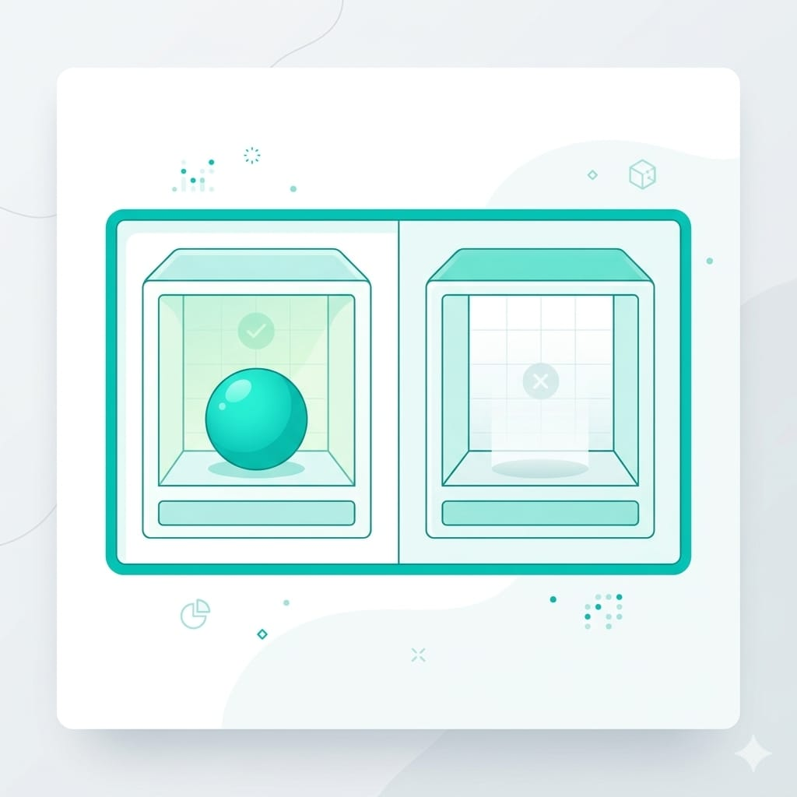

環境裝好了，這篇開始動手寫 Kotlin——Android 的官方語言。
如果你學過這系列的 Swift 篇，這篇會非常輕鬆，因為 Kotlin 跟 Swift 像親戚，觀念幾乎能直接搬過來，我會順帶點出對照。如果 Kotlin 是你的第一個語言也沒關係，這篇從零講。
小提醒：Android Studio 裡可以建立 Kotlin 檔案直接執行，或用線上的 Kotlin Playground 邊學邊試。跟著打最有效。
一、變數與常數
Kotlin 用兩個關鍵字存放資料：
var score = 100 // var：變數，之後可以改
val name = "智慧喵" // val：常數，設定後不能改
score = 120 // ✅ 可以，score 是 var
// name = "喵喵" // ❌ 會報錯，name 是 valvar：變數，值可以變動。val：常數，一旦設定就不能改。
學過 Swift 的話：var一樣、Kotlin 的val就是 Swift 的let。習慣一樣——能用val就用val，更安全。
二、資料型別
val age: Int = 30 // 整數
val height: Double = 175.5 // 小數
val isStudent: Boolean = false // 真／假
val city: String = "台北" // 文字Kotlin 一樣有型別推斷，不寫型別它也懂：
val count = 5 // 自動判斷 Int
val price = 19.9 // 自動判斷 Double
val title = "教學" // 自動判斷 String（跟 Swift 幾乎一樣，只是布林型別叫 Boolean 不是 Bool。）
三、流程控制
條件判斷
val temperature = 28
if (temperature >= 30) {
println("好熱，開冷氣")
} else if (temperature >= 20) {
println("天氣舒服")
} else {
println("有點冷")
}Kotlin 的 if 條件要加括號 ( )（Swift 不用），這是明顯的差異之一。
when：多重條件
val grade = "B"
when (grade) {
"A" -> println("優秀")
"B" -> println("良好")
"C" -> println("及格")
else -> println("要加油")
}when 就是 Kotlin 版的 switch，寫法更簡潔（用 ->）。
迴圈
// for 迴圈：跑範圍
for (i in 1..5) {
println("第 $i 次") // $i 是字串模板，把變數塞進文字
}
// while 迴圈
var count = 3
while (count > 0) {
println("倒數 $count")
count--
}1..5 是 Kotlin 的範圍寫法。$變數 是字串模板（Swift 是 \(變數)，Kotlin 用 $）。
四、函式
// 定義函式：接收名字，回傳打招呼的句子
fun greet(name: String): String {
return "哈囉，$name！"
}
// 呼叫它
val message = greet("智慧喵")
println(message) // 印出：哈囉，智慧喵！拆解：
fun：宣告函式的關鍵字（Swift 是func）。greet：函式名稱。(name: String)：參數。: String：回傳型別（Swift 用-> String，Kotlin 用: String）。
概念跟 Swift 完全一樣，只是關鍵字和符號略有不同。
五、null 安全：Kotlin 最重要的特色
這是 Kotlin 跟 Swift「可選型別」對應的觀念，一樣是新手最該花時間的地方。
問題一樣：一個變數「可能有值，也可能沒有值（null）」。Kotlin 預設不允許 null，你必須明確標示「這個可以是 null」——在型別後面加 ?：

var nickname: String? = "喵喵" // 型別後加 ? 表示可以是 null
nickname = null // ✅ 可以，因為標了 ?
var realName: String = "喵喵"
// realName = null // ❌ 沒標 ? 就不能是 null那怎麼安全地使用可能為 null 的值？幾個常用工具：
val nickname: String? = "喵喵"
// 1. 安全呼叫 ?.：是 null 就整個變 null，不會爆
println(nickname?.length)
// 2. Elvis 運算子 ?:：是 null 就用預設值
val displayName = nickname ?: "訪客"
// 3. if 判斷（智慧轉型）
if (nickname != null) {
println("暱稱長度 ${nickname.length}") // 這裡 Kotlin 知道它不是 null
}?.（安全呼叫）：如果前面是 null，整個結果就是 null，不會讓程式崩潰。?:（Elvis 運算子）：對應 Swift 的??，null 時給備用值。- 智慧轉型：用 if 確認不是 null 後，Kotlin 會自動當它是非 null，直接用。
為什麼重要？ 跟 Swift 一樣的道理——「以為有值、結果是 null」是 App 當機最經典的原因（Java 時代惡名昭彰的 NullPointerException）。Kotlin 從語言層面逼你處理，用一點前期麻煩換掉大量當機。
這一步大約要花多久？
Kotlin 基礎抓 2~3 週，但如果你學過 Swift，可能一週就上手，因為八成觀念相通，只是換語法。練法：
- 每個觀念親手打、改數值看變化。
- null 安全多練（
?.、?:、if 判斷）。 - 寫個小程式綜合練習，例如「輸入分數印等第」。
重點是手感，不是背。這些會在你寫每個 Android App 時反覆用到。
下一篇
語言基礎有了，下一篇開始好玩的——用 Jetpack Compose 做出第一個看得到、點得到的 App。如果你做過這系列的 SwiftUI 篇，會發現 Compose 的思路幾乎一樣，做起來會很快。
下篇見。🐾
系列導覽
- 📚 回到 App 開發完整指南 全系列目錄
- ⬅️ 上一篇：Android 開發第一步：環境準備
- ➡️ 下一篇：用 Jetpack Compose 做第一個 App